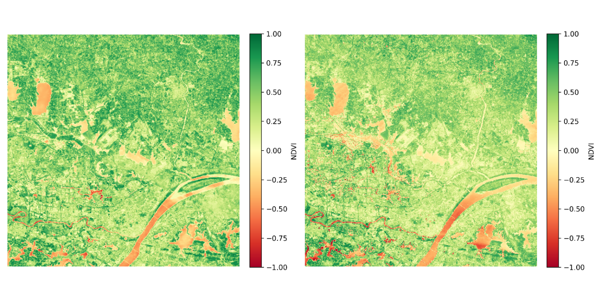

28 Remote Sensing for Agricultural Disaster Response
28.1 Introduction and Key Concepts
Agricultural disaster response plays a critical role in ensuring global food security, stabilizing rural economies, and promoting sustainable agricultural development. As agriculture remains the primary livelihood for a significant portion of the world’s population—particularly in disaster-prone and resource-limited regions—effective response mechanisms are essential to minimize the adverse impacts of natural and biological hazards. Timely and coordinated disaster response not only facilitates the rapid restoration of agricultural production but also provides vital information for national policy-making, risk reduction strategies, and long-term resilience-building efforts. Thus, advancing research in agricultural disaster response is of profound significance for achieving the goals of poverty alleviation, climate adaptation, and food system resilience amid increasing global uncertainties.
In this context, remote sensing has become a powerful tool for post-disaster evaluations, offering rapid, consistent, and large-scale observations of affected areas. Its capacity to deliver objective and up-to-date spatial information enables governments, humanitarian agencies, and decision-makers to assess damage, estimate losses, and prioritize interventions with greater efficiency and accuracy.
Agricultural disasters are diverse in nature and include droughts, floods, tropical storms, pest outbreaks, and wildfires. Each type of disaster presents unique challenges for impact evaluations, resource deployment, and recovery planning. A clear understanding of these hazard types is essential for designing responsive and context-specific evaluations frameworks.
Furthermore, it is important to establish a shared understanding of core terminology—such as disaster, damage, loss, and impact—and to situate the “response” phase within the broader disaster management cycle, which also includes mitigation, preparedness, and recovery. This conceptual clarity supports effective coordination among stakeholders and enhances the quality and comparability of disaster data.
This chapter lays the groundwork for the report by introducing the purpose, tools, and key concepts of agricultural disaster response. It establishes a unified vocabulary and analytical framework for the technical discussions and methods presented in subsequent chapters.
28.1.1 Purpose of Agricultural Disaster Response
Agricultural disaster response serves as a critical component of broader disaster management systems, aiming to mitigate the adverse impacts of natural hazards on agricultural systems and rural livelihoods. The overarching purpose of such response efforts can be distilled into three interrelated goals: safeguarding food security, facilitating the recovery of agricultural production, and supporting evidence-based policy-making.
First, ensuring food security is the most immediate and pressing objective of agricultural disaster response. Natural disasters such as droughts, floods, storms, and pest outbreaks can severely disrupt crop yields, livestock health, and supply chains, thereby threatening the availability, accessibility, and stability of food. An effective response strategy helps prevent food shortages, stabilize markets, and protect vulnerable populations from falling into food insecurity or malnutrition.
Second, agricultural disaster response is essential for the rapid recovery and rehabilitation of production systems. Post-disaster interventions—including damage evaluations, restoration of irrigation infrastructure, distribution of seeds and agricultural inputs, and technical assistance—enable farmers to resume planting and livestock operations in a timely manner. These efforts help minimize long-term economic losses and reduce the risk of secondary impacts such as rural unemployment, land abandonment, and degradation of agroecosystems.
Third, agricultural disaster response provides critical data and insights to inform policy-making processes at local, national, and international levels. Accurate and timely information on disaster impacts enables governments and humanitarian organizations to allocate resources efficiently, design targeted aid programs, and strengthen risk management frameworks. Moreover, lessons learned from past disaster events contribute to the development of more resilient and adaptive agricultural systems in the face of future climate-related threats.
In sum, agricultural disaster response is not only a reactive mechanism but also a strategic pillar for sustaining agricultural livelihoods, promoting rural resilience, and securing long-term food system stability in disaster-prone regions.
28.1.2 Role of Remote Sensing in Post-Disaster Evaluations
Remote sensing plays a pivotal role in post-disaster evaluations by enabling timely, large-scale, and objective evaluations of disaster impacts across agricultural landscapes. Unlike traditional ground-based surveys, which are often time-consuming, labor-intensive, and constrained by accessibility limitations in disaster-stricken areas, remote sensing technologies offer a rapid and synoptic means of data collection. This capability is particularly crucial in the aftermath of large-scale natural hazards such as floods, droughts, cyclones, wildfires, or pest outbreaks, where immediate information is essential for effective response and recovery planning. As shown in Figure 28.1, after a disaster occurs, the ground operation and control station promptly deploys agricultural satellites to capture images of the target area and transmit them back to the ground, enabling safe and rapid disaster evaluations and analysis over large areas.
Through the use of satellite imagery, aerial platforms, and unmanned aerial vehicles (UAVs), remote sensing allows for the continuous monitoring of vegetation health, surface water dynamics, land cover changes, and infrastructure damage. High temporal resolution enables near-real-time tracking of evolving disaster conditions, while high spatial and spectral resolution supports the detection of subtle changes in crop vigor, soil moisture, and land surface temperature. These observations facilitate the quantification of affected areas, the classification of damage severity, and the identification of priority zones for intervention.
Furthermore, the objectivity and consistency of remote sensing data provide a scientifically grounded basis for post-disaster reporting and decision-making. By integrating remote sensing outputs with geographic information systems (GIS) and ground validation, stakeholders can generate detailed impact maps and statistical estimates to inform emergency relief allocation, guide rehabilitation efforts, and support insurance claims or compensation mechanisms. In policy contexts, remote sensing-derived evaluations also contribute to risk reduction strategies, early warning systems, and the long-term development of climate-resilient agricultural practices.
In sum, remote sensing enhances the efficiency, transparency, and effectiveness of post-disaster evaluations, making it an indispensable tool for agricultural disaster response and sustainable risk management.
28.1.4 Core Terminology and Management Phases
Understanding the fundamental terminology and phases of disaster management is essential for interpreting the scope and objectives of agricultural disaster response. In this context, the term disaster refers to a serious disruption of the functioning of a community or system, caused by natural or human-induced hazards, which results in widespread human, material, economic, or environmental losses that exceed the affected community’s ability to cope using its own resources. Within the agricultural domain, disasters often manifest as extreme weather events, pest infestations, or environmental stressors that severely impair crop production, livestock systems, and rural livelihoods.
Closely related to this concept are the terms damage, loss, and impact, which, while sometimes used interchangeably, carry distinct meanings in disaster evaluations and response. Damage typically refers to the direct physical harm to agricultural assets, such as destroyed crops, submerged farmland, or collapsed storage facilities. Loss, in contrast, encompasses the broader economic and productivity-related consequences that result from this damage, such as reduced harvest volumes, lower incomes, or increased food prices. Impact is a more comprehensive term that captures both tangible and intangible effects of the disaster, including disruptions to food supply chains, livelihood insecurity, and long-term environmental degradation.
Within the broader disaster management cycle, which includes mitigation, preparedness, response, and recovery, the response phase plays a pivotal role in minimizing immediate losses and safeguarding lives and assets. This phase involves rapid evaluations of disaster impacts, mobilization of emergency resources, provision of aid (e.g., food, water, agricultural inputs), and temporary restoration of agricultural functions. Unlike mitigation and preparedness, which are proactive in nature, or recovery, which is focused on long-term rebuilding, the response phase is characterized by urgency and short-term action. Nevertheless, decisions made during this phase—such as how to allocate aid or prioritize interventions—can have lasting effects on the trajectory of recovery and resilience-building.
By establishing a clear conceptual understanding of these terms and the function of the response phase, this chapter provides a necessary foundation for the technical discussions in subsequent sections, particularly those involving the application of remote sensing in disaster evaluations and agricultural response planning.
28.2 Remote Sensing Technologies and Methods for Disaster Response
Remote sensing has become a vital tool in modern agricultural disaster response, offering timely, scalable, and cost-effective means to observe, analyze, and assess natural hazards and their impacts on agricultural systems. This chapter provides a comprehensive overview of the key technologies, platforms, and analytical methods commonly applied in remote sensing for disaster-related agricultural statistics. Emphasis is placed on monitoring crop conditions, land cover changes, water availability, and post-disaster recovery across farming landscapes.
We first introduce the principal remote sensing technologies used in agricultural disaster contexts, including optical sensors, radar systems, thermal infrared imaging, and multispectral and hyperspectral instruments — each contributing unique capabilities for detecting changes in vegetation health, soil moisture, surface water, and thermal anomalies affecting agricultural areas.
The next section outlines widely utilized satellite and UAV platforms such as Sentinel-1/2, Landsat series, MODIS, high-resolution commercial satellites, and unmanned aerial vehicles (UAVs), highlighting their roles in capturing spatial and temporal variations in agricultural landscapes before, during, and after disaster events.
Finally, we focus on typical remote sensing methods and thematic indicators relevant to agricultural disaster monitoring. These include vegetation indices (e.g., NDVI, EVI) for detecting crop stress and recovery, water body and flood mapping techniques (e.g., NDWI, SAR backscatter) for assessing water availability and inundation of croplands, drought monitoring approaches integrating thermal infrared and precipitation data, and change detection methods based on pre- and post-event image comparison and time-series analysis. The chapter also reviews the application of these technologies in monitoring diverse agricultural disaster types such as droughts, floods, pest infestations, storms, and wildfires.
28.2.1 Overview of major remote sensing technologies
Remote sensing technologies encompass a wide array of sensor systems designed to capture critical environmental information for agricultural disaster evaluations. Optical sensors, which detect reflected sunlight in the visible and near-infrared spectra, are extensively used for monitoring land cover, crop vigor, and surface water dynamics. Radar systems, particularly Synthetic Aperture Radar (SAR), operate independently of daylight and atmospheric conditions, providing invaluable data for mapping floods, soil moisture variations, and storm damage in agricultural regions.
Thermal infrared sensors measure emitted surface heat, supporting wildfire detection, drought monitoring, and evapotranspiration evaluations. Multispectral and hyperspectral instruments further enhance agricultural disaster analysis by discriminating between crop types, stress levels, and soil conditions. Multispectral sensors acquire data across several broad spectral bands, while hyperspectral sensors capture hundreds of narrow, contiguous bands, enabling detailed analysis of subtle changes in vegetation health, soil composition, and surface water quality. Integrating these technologies improves the timeliness and accuracy of agricultural disaster response and statistical reporting.
28.2.2 Common Satellite and UAV Platforms
A variety of satellite and UAV platforms serve as primary carriers for remote sensing sensors in agricultural disaster response. The common technical parameters of satellite and UAV platforms and their applications in agricultural disasters are shown in Table 2. Satellite missions such as the Sentinel-1 and Sentinel-2, operated by the European Space Agency, provide free, high-frequency radar and optical imagery, supporting flood mapping, crop monitoring, and damage evaluations. The Landsat series, with its long historical archive and moderate-resolution multispectral data, remains a valuable source for evaluating land use changes and post-disaster agricultural recovery.
| Platform Category | Platform Name | Operational Entity | Resolution | Primary Payload | Key Disaster Applications |
|---|---|---|---|---|---|
| Satellites | Sentinel-1 | European Space Agency (ESA) | 5–40 m | Synthetic Aperture Radar | Crop Monitoring |
| Sentinel-2 | European Space Agency (ESA) | 10 m | Multispectral Imager | Land Cover Change | |
| Landsat 8/9 | NASA/USGS | 15 m/30 m | Multispectral Sensor | Land-Use Change | |
| MODIS | NASA | 250 m–1 km | 36-band Radiometer | Cross-Regional Monitoring | |
| WorldView Series | Maxar Technologies | 0.3 m/1.24 m | High-res Optical Sensor | Disaster Damage Evaluations | |
| GeoEye | Maxar Technologies | 0.41 m / 1.65m | High-precision Multispectral Sensor | Crop Health Monitoring | |
| UAVs | Rotary-wing UAV | DJI, Autel, etc. | cm-level/ meter-level | Optical/Thermal Camera | Detailed Crop Evaluations |
| Fixed-wing UAV | Wingtra, SenseFly | 1–3 cm | Multispectral System | High-Precision Damage Evaluations | |
| VTOL UAV | Quantum Systems | 1 cm / 5 cm | LiDAR/ Multispectral | High-Precision Damage Evaluations |
NASA’s MODIS sensors aboard the Terra and Aqua satellites offer daily global observations, essential for tracking large-scale phenomena such as droughts, dust storms, and wildfire impacts on agricultural areas. High-resolution commercial satellites, including WorldView, Pleiades, and GeoEye, supply sub-meter imagery for detailed damage evaluations in rural and peri-urban farming zones. UAVs, equipped with optical, thermal, or multispectral sensors, have emerged as highly flexible tools capable of acquiring very high-resolution data over targeted agricultural sites, providing rapid situational awareness for crop damage evaluations, yield loss estimation, and resource planning.
28.3 Typical Remote Sensing Methods and Indicators
To interpret remote sensing data effectively in agricultural disaster response, a suite of analytical methods and thematic indicators has been developed. Vegetation indices such as the Normalized Difference Vegetation Index (NDVI) and Enhanced Vegetation Index (EVI) are widely employed to monitor crop health, biomass productivity, and ecological recovery following droughts, floods, fires, and pest outbreaks.
For surface water and flood detection, indices like the Normalized Difference Water Index (NDWI) and SAR backscatter coefficients reliably delineate inundated croplands and assess water-related impacts on agricultural infrastructure. Drought monitoring integrates thermal infrared data to detect surface temperature anomalies and evapotranspiration patterns, combined with precipitation records and soil moisture estimates to assess water stress and forecast crop yield losses.
Change detection techniques are crucial for disaster impact evaluations, enabling comparisons of pre- and post-event imagery to quantify damaged cropland, land cover transitions, and recovery dynamics. Methods range from simple image differencing and index thresholding to advanced time-series analyses and machine learning-based classification, supporting the rapid identification of affected agricultural areas and informing emergency management decisions, food security evaluations, and agricultural statistical reporting.
28.4 Workflow and Data Integration for Agricultural Disaster Response
This section outlines the comprehensive workflow and data integration framework designed to support agricultural disaster response efforts. As illustrated in Figure 28.3, it begins with Baseline Mapping and Preparedness, which involves establishing detailed, up-to-date agricultural and environmental datasets to serve as reference points before disasters occur. Next, it addresses Real-Time Monitoring, focusing on the use of remote sensing, field data, and digital tools to detect and track disaster events as they unfold. Following this, Post-Disaster Loss Evaluations and Analysis covers methods for evaluating the extent of damage, estimating losses, and understanding the broader impacts on agricultural systems. Finally, Reporting and Decision Support describes how processed data and analyses are translated into actionable reports and decision-making tools to guide timely and effective response strategies. Together, these components form an integrated workflow for enhancing resilience and operational efficiency in agricultural disaster management.
28.5 Baseline Mapping and Preparedness
Baseline mapping and preparedness form the foundation for effective agricultural disaster response by providing comprehensive pre-disaster datasets. The types and sources of the basic datasets are shown in Table 3, this phase involves the systematic collection, integration, and analysis of high-resolution agricultural and environmental data, including crop types, soil properties, water resources, and historical disaster records. Remote sensing technologies such as satellite imagery and LiDAR generate detailed spatial maps, which are validated through ground surveys to ensure accuracy.
| Data Type | Acquisition Techniques | Update Frequency | Main Applications |
|---|---|---|---|
| Crop Distribution Maps | Satellite Imagery + LiDAR | Quarterly | Disaster Risk Differentiation |
| Soil Properties Database | Field Surveys + Spectral Analyses | Annual | Soil and Water Conservation Planning |
| Historical Hazard Records Repository | Archives Digitization + GIS Integration | Event-Driven | Early Warning Models Training |
| Dynamic Maps of Water Resources | Hydrological sensors + Remote Sensing Inversion | Monthly | Irrigation Optimization Design |
Beyond data collection, this stage focuses on developing early warning systems and contingency plans. By integrating climate models with historical disaster patterns, stakeholders can identify vulnerable areas and implement preventive strategies like crop diversification and water management. Regular updates to datasets, along with the incorporation of climate change projections, strengthen the overall resilience of agricultural systems.
Additionally, this phase emphasizes the establishment of standardized protocols for data collection, storage, and sharing to ensure consistency and interoperability. Cloud-based platforms and metadata standards enable secure, real-time data exchange among farmers, researchers, and policymakers, fostering collaboration and preparedness for coordinated disaster response efforts.
28.5.1 Real-Time Monitoring
Real-time monitoring is essential for detecting and tracking agricultural disasters as they occur. The corresponding technical parameters for real-time detection are shown in Table 4, this stage leverages advanced remote sensing technologies, including synthetic aperture radar (SAR) and multispectral imaging, to collect timely data on environmental parameters such as temperature, precipitation, and vegetation health. These remote observations are complemented by field-based sensors and UAV imagery to provide localized, high-resolution insights.
| Type of Technology | Spatial Resolution | Timeliness | Typical Application Scenarios |
|---|---|---|---|
| SAR Radar | 10–100m | 6 h/times | Flood Inundation Detection |
| Multi-spectral Imaging | 1–5m | Daily | Early Identification of Pests and Diseases |
| IoT Sensors | Spot Precise | Real-Time Continuous | Soil Moisture Monitoring |
| Aerial Photography with UAVs | 0.1–0.5m | On-demand | Localized On-demand Disaster Verification |
Centralized monitoring platforms integrate these diverse data streams, enabling the automated detection of anomalies—like abrupt shifts in vegetation indices or moisture levels—that signal the onset of droughts, floods, or pest outbreaks. Machine learning models analyze these patterns, predict potential disaster developments, and support the dissemination of early warnings to farmers and decision-makers through mobile apps and SMS alerts.
This phase also highlights the importance of continuous data validation and system calibration to maintain accuracy and reliability. Robust communication networks and data-sharing protocols ensure that real-time monitoring outputs are actionable, timely, and effectively distributed across stakeholders, enhancing the agricultural system’s capacity to respond to rapidly evolving disaster scenarios.
28.5.2 Post-Disaster Loss Evaluations and Analysis:
Post-disaster loss evaluations and analysis quantify damage and evaluate the broader impacts of disasters on agricultural systems. By integrating pre-disaster baseline data with post-event observations from remote sensing, UAV surveys, and field reports, affected areas are mapped and crop losses are estimated using geospatial techniques like change detection and vegetation index analysis. As shown in Figure 28.4, the 2023–2024 drought monitoring NDVI time series comparison example for central Hubei clearly illustrates the significant changes in vegetation coverage in the affected areas before and after the disaster.

Economic evaluations model the financial consequences of disasters on farmers and agricultural markets, while social impact evaluations gauge effects on livelihoods and food security. Multi-source data fusion enhances the accuracy of these evaluations, combining satellite imagery with field data to validate crop condition and yield losses. Machine learning models further assist in forecasting long-term impacts on agricultural productivity and resilience.
This phase also focuses on extracting lessons learned and identifying best practices to improve future disaster response. Participatory approaches engage local communities in the evaluations process, ensuring that recovery strategies are data-driven yet context-sensitive. Insights from this analysis inform adaptive management frameworks and guide resilience-building policies within agricultural systems.
28.6 Reporting and Decision Support
The final stage translates processed data and analyses into clear, actionable outputs for decision-makers. Comprehensive reports summarize disaster impacts, crop loss estimates, and recommended response measures, presented through intuitive visualizations such as maps, charts, and dashboards to facilitate rapid understanding.
Decision support systems (DSS) integrate multi-source data—from remote sensing to economic models—to provide real-time, evidence-based recommendations for emergency response, resource allocation, and recovery planning. These systems help prioritize interventions, such as distributing inputs to severely affected areas or targeting pest control based on geospatial analysis. Regular briefings, workshops, and knowledge-sharing sessions engage farmers, policymakers, and international partners to ensure informed, coordinated responses.
Finally, this stage reinforces continuous feedback loops to evaluate the effectiveness of disaster response strategies. Performance metrics and impact evaluations track recovery outcomes, while iterative improvements enhance future preparedness and operational efficiency. By merging data-driven insights with local expertise, reporting and decision support strengthen the resilience of agricultural systems in the face of recurring disasters.